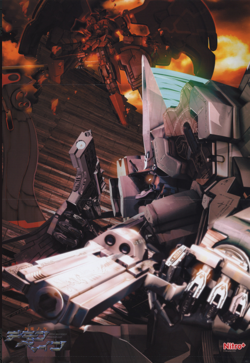

死灵之书
“AlAzif”，也就是《死灵之书》(Necronomicon)。最高位的魔导书，拥有各种不可思议的法术。召唤形态是拥有白玉般的肌肤，樱色的长发，翡翠色的眼瞳的美丽少女，以16岁的相貌出现。 死灵之书的相关法术派系为灵性。
魔术甲胄
B级：
形象为黑色的紧身皮装，施法时全身的咒文都会发亮。术者的一只眼睛变成红色，一只眼睛变成蓝色，头发变白，获得持久的识破隐形能力（视为获得【侦测等级】为C，魔幻本质的侦测能力），并且能看到任何鬼魂（但鬼魂也会同样觉察到术者的窥视）。力量+2，敏捷+2。甲胄本身视为拥有4/4防御，拥有『防弹』和『防能量武器』特性的盔甲，但完全不影响活动。每维持10轮需要5点魔力，魔导书可以用自己的魔力来支付。
A级：
在B级魔术甲胄的基础上，背后长出漆黑的魔术之翼，可以用每点智力10米/轮的速度进行飞行，机动性为完美。力量，敏捷各自再+4，防御成为8/8。在进行以术者为目标的法术的对抗时，获得+4有利的判定。每维持10轮需要7点魔力，可以由魔导书本身支出。
AL.AZIF的本体
外貌：拥有白玉般的肌肤，樱色的长发，翡翠色的眼瞳的美丽少女，以16岁的相貌出现。性格野蛮骄傲，但其实内心是坚强而温柔的。
属性：力量4，敏捷6，耐力5，智力11，感知6，决心6，风度8，操控5，沉着4
技能：视为所有技能全部为2。特殊：学识8（魔法5）
鬼械神：艾恩（Aion)
它是有着钢铁般的意志，以冷酷的剑刃收割生命的死神(Deus ex Mortis)。是连不可理喻的事物也能斩灭的超级不可理喻。是能将超越生命的生命打倒、而自己本身就是超出生命范畴之外的，无机的破坏者。
被冠以“永恒”之名的，机械构筑的神祗(Deus ex Machina)。
特殊装备如下：
对灵狙击炮(Anti Spiritual Rifle)：与艾恩同高的巨大武装，必要时，可以消耗1个移动动作召唤它，将其由飞舞的魔法文字，在艾恩的手上凝结成闪耀金属光辉的银色巨炮，运作时，它的咒术引擎会将成千上万的魔法文字转化成有意义的言灵，在炮身周围包裹上以肉眼无法看清的速度旋转的无数魔法阵，将能量发射出去。开炮的效果类同于死灵之书的法术“召唤克图格亚”，但视为射程单位2000，宽度30米的光束攻击，每超出一个射程单位，伤害减少2点，跟其他远程武器一样，极限射程为8个射程单位。你无法将超魔技巧运用其上。
飞行装置：以法术构造的金属之翼，可以让艾恩获得飞行能力，机动性为良好。并且每回合一次，艾恩可以在一次飞行移动中移动陆地速度4倍的距离。

专有法术
D级：提阿马特之叱喝（Excorcism of ANU），巴尔塞偃月刀，伊塔库亚之触碰
C级：火净诅咒（The Binding of the Evil Sorcerers）
B级：召唤阿特拉克・纳克亚(Atlach-Nacha)
A级：尼托克里斯之镜（The mirror of Nitocris） 召唤克图格亚（Cthugha），召唤伊塔库亚（Ithaqua）
S级：约格.索托斯之钥（Yog-Sothoth）
提阿马特之叱喝（Excorcism of ANU）
类别：灵性
等级：D
花费：1点
成分：言语，姿势，书本
动作：标准
射程：个人
目标：自身
持续：成功数*1分钟
对抗：无
以安努的力量叱喝邪恶之力。对黑暗生物获得每2威力值3点的偏斜防御（力场性质），并在对抗影响心灵的魅惑或胁迫效果时，在判定上获得等量的表现加值。同时各种召唤生物如果要攻击术者，必须进行一个意志检定，对抗你的施法检定，如果失败则无法攻击，这是一个如同法术等级、影响心灵的效果。
增幅：每额外支付1点魔力，该法术带来的防御或对抗加值增加1点。
研发：法术升阶
巴尔塞偃月刀
类别：物质
等级：D
花费：1点
成分：言语，姿势
动作：标准
射程：至近
效果：一把魔法弯刀
持续：成功数*1分钟
对抗：无
制造出一把纯由法术构成，极为锐利的弯刀，它视为魔法武器，在弯刀的基础上其武器伤害获得等同威力值的增强加值，可以作为轻投掷武器对远程目标进行攻击，基础射程为10米，但改为以智力代替力量来计算投掷攻击的射程上限，并且可以无视4点射程减值（即在10*3倍=30米射程内无需承受射程减值）和4点掩蔽防御（但是无法攻击全掩蔽目标），攻击之后会自行回到你的手上。你可以创造多把偃月刀，但最多只能在两只手上各保留一把，并且在投掷中控制它们，如果你创造了第三把偃月刀，那么第一把刀就会自动变成发亮的魔法文字，消散在空中。
另外，这种弯刀视为魔杖，能够以武器伤害作为法术强度，可以做为咒文的媒介传递接触性法术，也可以施展必须使用魔杖的法术。
增幅：每额外支付2点魔力，弯刀的武器伤害额外增加1点。
研发：法术升阶
法术等级达到C级时，你可以用智力代替敏捷来进行投掷偃月刀的判定。
法术等级达到A级时，你可以用一个全回合动作丢出两把弯刀，但会由于分心而分别承受-2DP的惩罚。
伊塔库亚之触碰
类别：灵性
等级：D
花费：1点
成分：言语，姿势
动作：标准
射程：接触
目标：接触的生物
持续：成功数*1轮或直到能量散发
对抗：无
呼唤伊塔库亚的部分力量，让你的手掌冒出丝丝冷气，碰触之处皆会化为寒冰。你以施法检定进行近战接触攻击，如果成功命中对方，那么能量立即散发，造成2+威力值的冻寒伤害。同时，森冷的冰霜会从被碰触之处开始向对方身上蔓延，受术者的敏捷相关检定获得威力值的惩罚，速度减少5倍威力值，这些是冻寒减值，持续成功数*1轮。对方可以消耗若干点能量，用一个迅捷动作驱散每能量1DP和5点速度的减值（炎系能量只需要一半），但寒冷伤害无法如此被抵消。
你可对同一个目标多次使用这个法术进行攻击并造成冻寒伤害，但效果不会因此叠加，持续时间则只会计算最长的一次。
这个法术的能量也可以在一轮内冻结不超过10升的水，它们会按照自然规律，从你碰触的位置为圆心往外冻结，你无法控制方向和形状。
增幅：每额外支付3点魔力，该法术造成的伤害提高1点。
增幅：每额外支付2点魔力，该法术造成的罚值增加1点，并额外降低5米速度。
研发：法术升阶
火净诅咒（The Binding of the Evil Sorcerers）
类别：灵性
等级：C
花费：3点
成分：言语，姿势，书本
动作：1分钟
射程：接触
目标：接触的生物
持续：立即
对抗：见描述
当你被古老的诅咒困扰时，可以打开死灵之书，念出记载于其上的祷文，同时呼唤三位苏美尔的神祗： 安努（ANU）, 恩利勒（ENLIL）, 和恩基（ENKI）的力量，借助神力的火焰，驱逐诅咒。这是一个强大而危险的法术。你的身上显现出没有热度的熊熊火光，你可以用这种火焰的效果驱逐自己身上的诅咒，或者以它净化它人。诅咒会化为黑色的游荡能量，从目标的身体上浮现出来，随后被火焰焚净，化为虚无。你在法术成功施展的瞬间，可以立即清除目标身上所有法术等级或以下的诅咒，但如果该法术超过法术等级，那么你需要进行一个施法检定，并在此检定中额外获得威力值的附加成功数作为增强加值，对抗施咒者的施展检定（或意志检定，若无施展检定）。如果成功，则诅咒被立即驱逐，如果失败，你通常可以继续尝试。
要在一轮内施展这个法术，你在检定中承受-5DP减值，且在进行判定时，对方施法者等级，以及施法的关键属性和施法所用技能，每个比你的对应项高1，你的DP就要承受-1惩罚。如果最终失败，那么诅咒无豁免地转移到你的身上，且无论前提条件为何，立即生效。如果失败5或更多，那么无法控制的神力会侵蚀你的思想，神火在你的体内焚烧，你失去一点感知和一点耐力，只有在主神空间才能恢复，且不能再次为这个目标重试这道法术。
研发：法术升阶
召唤阿特拉克・纳克亚(Atlach-Nacha)
类别：灵性
等级：B
花费：5点
成分：言语，姿势
射程：智力*5米
动作：标准
效果：半径20米扩散范围内的蜘蛛网
持续：成功数*1分钟
对抗：反射或力量+运动；见描述
召唤阿特拉克・纳克亚（旧日支配者中的蜘蛛神）的部分力量，在现世投影出以魔力构成的蛛网。这些蛛丝必须固定在两个或多个完全相对的固定点上，否则就会因不能完全张开而消失。在蛛网中的生物会被粘丝纠缠住。你本人不会受此影响。
施展这道法术时，在目标范围内的对手必须通过反射检定（这视为一个范围攻击）对抗你的施法检定以避开蛛网。如果对抗成功，那么他就能够行动；如果对方对抗失败，则被蛛网黏住，如同被擒抱住一样，以施法检定作为擒抱dc，每回合开始或主动进行尝试时，这些角色需要进行擒抱对抗判定以摆脱擒抱，他们的擒抱对抗判定结果若超过dc，则可以成功挣脱蛛网。
对于被蛛网缠住的目标来说，你之后使用的这道法术，若是他们再次对抗失败，就会陷入定身状态。
蛛网可以被视作掩蔽物，并为人物提供部分或完全掩蔽。每0.1米的魔力蛛丝，视为结构5，硬度3的细线，但额外具有火易伤5。
研发：法术升阶
尼托克里斯之镜（The mirror of Nitocris）
类别：灵性
等级：A
花费：7点
成分：言语，姿势
射程：智力*20米
动作：标准
范围：10米半径球形扩散区域
持续：成功数*1轮
对抗：见描述
不可思议的法术，使虚界和现实的界限变得模糊，从而使幻象具现化。你进行施法判定，幻象的真实程度受到成功数影响。你必须维持专注才能投射幻象。如果对方通过了判定，这个法术就对其完全无效。这是一个A级幻象来源的效果，幻象模拟出的物理性质/特性最多不超过B级环境带来的影响。
成功数 效果
1 出现容易识破的幻象，只要发生互动，就会自动被识破。
1+ 幻象在视觉上已经相当清晰，但依然没有实体。必须发生互动，才能通过侦查检定/察言观色检定对抗来识别，只要对方通过判定，就会发现这是幻术。如果制造的是可动物体的幻象，那么最多只能制造1个
11+ 幻象具有一定的真实感，会呈现出温度，触感，电磁场等反应，可以发出声音。如果制造的是可动物体的幻象，那么最多可以制造2个。
21+ 幻象更加接近真实的效果，如果是可动物体，则属性最高可等同于你的成功数一半，但没有其他能力。不能超过你本人的智力和操控（取低者）拥有你所有技能的50%（向下取整）如果制造的是可动物体的幻象，那么最多可以制造5个。
31+ 幻象极度接近真实。拥有所有的物理特性，如果是可动物体，则属性最高可等同于你的成功数，不能超过你本人的智力和操控（取高者）。即使被看穿也会保留一半的数值，拥有你所有的技能等级。如果制造的是可动物体的幻象，那么数量最多等于你的操控值。
召唤克图格亚（Cthugha）
类别：灵性
等级：A
花费：7点
成分：言语，姿势，书本
动作：标准
射程：智力*20米
范围：横截面为20米直径圆形的智力*20米线状
持续：立即
对抗：反射
召唤旧日支配者克图格亚的力量，将其以纯粹的能量方式投射在物质界，神力的碎片化作爆燃的净火，将周围的一切彻底烧尽。将你的智力值加上你的学识等级及学识上的附加成功数，以此结果作为范围攻击的伤害。由于这是极为纯净的能量，而不是真正的火焰，所以火焰抗力和免疫火焰的能力对它完全不起作用。闪避者会承受等于施法检定的惩罚。法术产生的高温会点燃物体，但它本身并不会引起持续的燃烧。该法术在水和真空中都可以正常起效，灵体和精神体，以及能量体也会正常受到伤害。
召唤伊塔库亚（Ithaqua）
类别：灵性
等级：A
花费：7点
成分：言语，姿势，书本
动作：标准
射程：智力*20米
范围：半径30米球形扩散区域
持续：立即
对抗：反射
将旧日支配者伊塔库亚的力量以纯粹的能量方式投射在物质界，神力的能量化为狂风和寒冰，将四周化为冰雪地狱。将你的智力值加上你的学识等级及学识上的附加成功数，以此结果作为范围攻击的伤害。这种伤害中，一半是烈风造成的冲击伤害，一半是寒冷。由于寒冷能量是纯粹的神力造成，所以免疫寒冷或类似的能力无法对其起作用。该法术造成的每1点伤害都将造成1点冻结点数，这一冻结点数额外造成5倍的速度减值。此外，反射检定的每个失败数都会将受术者向空中吹飞10米，并如常受到坠落伤害。灵体，精神体和能量体不会受到烈风的伤害，但会受到正常的寒冷伤害。
约格.索托斯之钥（Yog-Sothoth）
类别：灵性
等级：SSS（特殊的，该法术无法通过S级死灵之书魔导书直接获得，获得专有法术的效果也改为获得一个通用魔法中的S级法术）
花费：9点
成分：言语，姿势，书本
动作：见描述
射程：目标或范围：见描述
持续：见描述
对抗：无
你召唤约格.索托斯的力量，穿行于无穷无尽的时空裂缝。即使只能利用约格.索托斯的极小一部分力量，这依然是个极为强大而危险的法术。每个场景，你只能使用这道法术的每个用法一次，若超出此限度，门之钥的力量将跨越时间与空间，对你或整个世界产生超越常理、不可预料的后果。
这个法术有几种用法：
一.短距传送：这是相对安全的使用方式。你可以用一个移动动作，往任意方向传送最多智力X200米，并且携带不超过100公斤的物品。如果你指定的位置有物体，那么你会出现在你跟目标之间没有物体遮挡，且离目标最近的安全位置。
二.长距离传送：这种做法耗时较长，也比较危险。你可以在吟唱这个法术的同时，花费十分钟绘制一个法阵，并且进行一次施法判定，将对目标地点的印象，或者具体的魔法空间坐标绘制在法阵上，然后将自己和最多5个体型为6或以下的自愿生物传送出去。如果成功数在10个或以下，你会直接迷失在时空的裂缝之中，ST随机决定你的情况（一般都比较糟糕）；在10到20个成功数之间，会传送到目标附近一千米之内的随机地点。成功数在20个以上时，可准确无误地传送到目标地点。
-----------------------
难度调整表：
・对目标非常熟悉：+10DP
・有过一定的研究：+5DP
・看过图片或者详细的地图：+0DP
・听过一些描述，大致知道样子：-5DP
・完全不熟悉，只听过传闻：-10DP
-----------------------
三.正向时间跳跃：即使借助了这个强大的法术，以人类的身体和意识，也无法自由在充满无限可能性的时间之河里随意移动。但你依然可以小幅度地在自己身上拉扯时间线。你可以用一个反射动作施展这个法术，让自己在时间上往后移动一小段，你最多可以跳跃10轮。你会在原地消失这些轮数，在之后你应该行动的回合重新出现，这视为你跳走的同一个回合，所以如果你之前已经做过标准动作或者移动动作，那么你这回合会失去这些动作。
四.逆向时间跳跃：在第一轮以一个标准动作启动这个法术，这会消耗额外的5点魔力和2点意志。然后如果你在接下去的连续4轮里面，每轮都以一个自由动作消耗3点魔力以维持这个法术，那么在第四轮结束的时候，你可以用一个标准动作，让时间回归4轮，回到第一轮你刚刚开始集中精神时光回归的时刻。在第二次时间流经过里面，因为已经知道了将发生什么事情，所以你可以决定采用完全不同的策略和动作（虽然如果在一开始经过时间时采用不同动作，原来的时间流会有所改变）。即使时间倒回，对你而言这4轮依然是存在过的，所以伤势和能量的消耗等都不会恢复。
五.时间暂停：通过时间轴的调整，使得你可以在短时间内跳出时间流。使用标准动作施展这道法术，你获得2轮主观时间可以自由行动，普通或是魔法火焰、寒冷、毒气等依然会伤害你。由于你事实上已经不在这个世界的时间之内，所以法术作用期间，其他生物不会因你的攻击或法术而受伤，你也不能以那些生物为物理攻击或法术的目标。区域法术持续时间若比该法术剩下的时间长，则可在它结束后继续生效。若物品被其他生物所持有、携带或穿着，则你不能移动或伤害它们，但你可以影响无主物品。